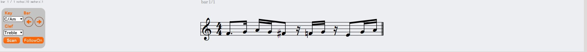

<!DOCTYPE html>
<html lang="ja">
<head>
  <meta charset="UTF-8" />
  <meta name="viewport" content="width=device-width, initial-scale=1" />
  <title>ScoreViewer — OTODESK</title>
  <link rel="preconnect" href="https://fonts.googleapis.com" />
  <link rel="preconnect" href="https://fonts.gstatic.com" crossorigin />
  <link href="https://fonts.googleapis.com/css2?family=Geist:wght@300;400;500;600&family=Geist+Mono:wght@400;500&family=Instrument+Serif:ital@0;1&display=swap" rel="stylesheet" />
  <style>
    :root {
      --bg: #f6f5f1;
      --bg-2: #ffffff;
      --ink: #0a0a0a;
      --ink-2: #1a1a1a;
      --dim: #6b6b6b;
      --dim-2: #a5a5a5;
      --rule: #1a1a1a;
      --rule-faint: #d8d6cf;
      --accent: #00e5a0;
      --mono: "Geist Mono", ui-monospace, monospace;
      --sans: "Geist", -apple-system, system-ui, sans-serif;
      --serif: "Instrument Serif", Georgia, serif;
    }
    body.dark {
      --bg: #080c0a;
      --bg-2: #0e1410;
      --ink: #e8f5ef;
      --ink-2: #c0d8cc;
      --dim: #7a9e8c;
      --dim-2: #4a6456;
      --rule: #e8f5ef;
      --rule-faint: #1a2820;
    }
    * { box-sizing: border-box; }
    html, body { margin: 0; padding: 0; }
    body {
      background: var(--bg); color: var(--ink);
      font-family: var(--sans);
      -webkit-font-smoothing: antialiased;
      overflow-x: hidden;
    }
    a { color: inherit; text-decoration: none; }
    button { background: none; border: none; color: inherit; cursor: pointer; font: inherit; padding: 0; }
    ::selection { background: var(--accent); color: #000; }

    /* NAV */
    .sv-nav {
      position: fixed; top: 0; left: 0; right: 0; z-index: 100;
      display: flex; align-items: center; justify-content: space-between;
      padding: 18px 40px;
      border-bottom: 1px solid transparent;
      transition: background 0.3s, border-color 0.3s;
    }
    .sv-nav.scrolled {
      background: var(--bg); border-color: var(--rule-faint);
    }
    .sv-nav-left { display: flex; align-items: center; gap: 20px; }
    .sv-back {
      font-family: var(--mono); font-size: 11px;
      color: var(--dim); letter-spacing: 0.05em;
      display: flex; align-items: center; gap: 6px;
      transition: color 0.15s;
    }
    .sv-back:hover { color: var(--accent); }
    .sv-brand { font-size: 13px; font-weight: 600; letter-spacing: 0.05em; }
    .sv-brand-sep { color: var(--dim-2); margin: 0 4px; }
    .sv-brand-sub { font-family: var(--mono); font-size: 11px; color: var(--accent); }
    .sv-nav-right { display: flex; align-items: center; gap: 16px; }
    .sv-lang {
      font-family: var(--mono); font-size: 10px; color: var(--dim);
      border: 1px solid var(--rule-faint); padding: 4px 10px;
      cursor: pointer; transition: border-color 0.15s, color 0.15s;
    }
    .sv-lang:hover { border-color: var(--accent); color: var(--accent); }

    /* HERO */
    .sv-hero {
      padding: 130px 40px 80px;
      max-width: 1200px; margin: 0 auto;
      display: grid; grid-template-columns: 1fr 1fr; gap: 60px;
      align-items: center;
    }
    .sv-hero-badge {
      display: inline-flex; align-items: center; gap: 8px;
      font-family: var(--mono); font-size: 10px; font-weight: 700;
      letter-spacing: 0.15em;
      color: #000; background: var(--accent);
      padding: 4px 12px; margin-bottom: 24px;
    }
    .sv-hero-title {
      font-size: clamp(36px, 5vw, 56px);
      font-weight: 400; line-height: 1.1;
      font-family: var(--serif); font-style: italic;
      margin: 0 0 20px; text-wrap: pretty;
    }
    .sv-hero-title em { font-style: normal; color: var(--accent); }
    .sv-hero-desc {
      font-size: 15px; color: var(--ink-2); line-height: 1.75;
      margin: 0 0 32px; text-wrap: pretty;
    }
    .sv-hero-actions { display: flex; align-items: center; gap: 12px; flex-wrap: wrap; }
    .sv-btn-dl {
      display: inline-flex; align-items: center; gap: 8px;
      background: var(--accent); color: #000;
      font-family: var(--mono); font-size: 12px; font-weight: 700;
      padding: 12px 22px; letter-spacing: 0.05em;
      transition: opacity 0.15s;
    }
    .sv-btn-dl:hover { opacity: 0.85; }
    .sv-btn-src {
      display: inline-flex; align-items: center; gap: 8px;
      border: 1px solid var(--rule-faint); color: var(--dim);
      font-family: var(--mono); font-size: 12px;
      padding: 11px 20px; letter-spacing: 0.05em;
      transition: border-color 0.15s, color 0.15s;
    }
    .sv-btn-src:hover { border-color: var(--ink); color: var(--ink); }
    .sv-hero-counts {
      font-family: var(--mono); font-size: 10px; color: var(--dim-2);
      display: flex; gap: 12px; margin-top: 12px;
    }

    /* SCREENSHOT */
    .sv-hero-img {
      position: relative; aspect-ratio: 16 / 10;
      border: 1px solid var(--rule-faint); overflow: hidden;
      background: var(--bg-2);
    }
    .sv-hero-img img {
      width: 100%; height: 100%; object-fit: cover; display: block;
    }
    .sv-hero-img-fallback {
      width: 100%; height: 100%;
      display: flex; flex-direction: column;
      align-items: center; justify-content: center; gap: 12px;
      background: linear-gradient(135deg, #00e5a010 0%, #00e5a005 100%);
    }
    .sv-staff-lines {
      display: flex; flex-direction: column; gap: 7px;
      opacity: 0.3;
    }
    .sv-staff-line {
      width: 200px; height: 1px; background: var(--dim);
    }
    .sv-img-label {
      font-family: var(--mono); font-size: 10px; color: var(--dim-2);
      letter-spacing: 0.1em;
    }

    /* SECTION COMMON */
    .sv-section {
      padding: 72px 40px;
      max-width: 1200px; margin: 0 auto;
    }
    .sv-section-label {
      font-family: var(--mono); font-size: 10px;
      color: var(--dim); letter-spacing: 0.12em;
      margin-bottom: 16px;
    }
    .sv-section-title {
      font-size: clamp(24px, 3vw, 36px);
      font-weight: 500; line-height: 1.2;
      margin: 0 0 48px; text-wrap: pretty;
    }
    .sv-section-title span { color: var(--accent); }
    .sv-divider {
      border: none; border-top: 1px solid var(--rule-faint);
    }

    /* FEATURES GRID */
    .sv-features-grid {
      display: grid; grid-template-columns: repeat(3, 1fr); gap: 1px;
      border: 1px solid var(--rule-faint);
    }
    .sv-feature {
      padding: 28px 24px;
      background: var(--bg-2);
      border: none;
      transition: background 0.2s;
    }
    .sv-feature:hover { background: var(--accent)08; }
    .sv-feature-icon {
      font-size: 20px; margin-bottom: 12px;
      color: var(--accent);
    }
    .sv-feature-title {
      font-size: 14px; font-weight: 600; margin: 0 0 8px;
    }
    .sv-feature-desc {
      font-size: 12px; color: var(--dim); line-height: 1.65;
      margin: 0; font-family: var(--mono);
    }

    /* INSTALL */
    .sv-install-grid {
      display: grid; grid-template-columns: repeat(3, 1fr); gap: 24px;
    }
    .sv-step {
      background: var(--bg-2); border: 1px solid var(--rule-faint);
      padding: 28px 24px;
    }
    .sv-step-num {
      font-family: var(--mono); font-size: 11px; font-weight: 700;
      color: var(--accent); letter-spacing: 0.1em; margin-bottom: 16px;
    }
    .sv-step-title {
      font-size: 14px; font-weight: 600; margin: 0 0 8px;
    }
    .sv-step-desc {
      font-size: 12px; color: var(--dim); line-height: 1.65;
      margin: 0; font-family: var(--mono);
    }
    .sv-step-code {
      font-family: var(--mono); font-size: 10px;
      background: var(--bg); border: 1px solid var(--rule-faint);
      padding: 6px 10px; margin-top: 10px; display: block;
      color: var(--accent); word-break: break-all;
    }

    /* COMPAT */
    .sv-compat {
      background: var(--bg-2); border: 1px solid var(--rule-faint);
      padding: 28px 32px;
      display: flex; align-items: flex-start; gap: 40px;
      flex-wrap: wrap;
    }
    .sv-compat-group { display: flex; flex-direction: column; gap: 6px; }
    .sv-compat-label {
      font-family: var(--mono); font-size: 9px; color: var(--dim);
      letter-spacing: 0.12em; text-transform: uppercase;
    }
    .sv-compat-value {
      font-size: 14px; font-weight: 500;
    }
    .sv-compat-note {
      font-family: var(--mono); font-size: 10px;
      color: var(--dim); line-height: 1.6;
      flex: 1; min-width: 240px;
    }

    /* FOOTER NAV */
    .sv-footer {
      border-top: 1px solid var(--rule-faint);
      padding: 40px;
      max-width: 1200px; margin: 0 auto;
      display: flex; align-items: center; justify-content: space-between;
    }
    .sv-footer-brand {
      font-size: 12px; font-weight: 600; letter-spacing: 0.05em;
      color: var(--dim);
    }
    .sv-footer-links {
      display: flex; gap: 24px;
    }
    .sv-footer-links a {
      font-family: var(--mono); font-size: 10px;
      color: var(--dim); transition: color 0.15s;
    }
    .sv-footer-links a:hover { color: var(--accent); }

    @media (max-width: 900px) {
      .sv-hero { grid-template-columns: 1fr; gap: 40px; padding: 110px 24px 60px; }
      .sv-features-grid { grid-template-columns: repeat(2, 1fr); }
      .sv-install-grid { grid-template-columns: 1fr; }
      .sv-nav { padding: 16px 24px; }
      .sv-section { padding: 56px 24px; }
    }
    @media (max-width: 600px) {
      .sv-features-grid { grid-template-columns: 1fr; }
    }
  </style>
</head>
<body>

<div id="root"></div>

<script src="https://unpkg.com/react@18.3.1/umd/react.development.js" integrity="sha384-hD6/rw4ppMLGNu3tX5cjIb+uRZ7UkRJ6BPkLpg4hAu/6onKUg4lLsHAs9EBPT82L" crossorigin="anonymous"></script>
<script src="https://unpkg.com/react-dom@18.3.1/umd/react-dom.development.js" integrity="sha384-u6aeetuaXnQ38mYT8rp6sbXaQe3NL9t+IBXmnYxwkUI2Hw4bsp2Wvmx4yRQF1uAm" crossorigin="anonymous"></script>
<script src="https://unpkg.com/@babel/standalone@7.29.0/babel.min.js" integrity="sha384-m08KidiNqLdpJqLq95G/LEi8Qvjl/xUYll3QILypMoQ65QorJ9Lvtp2RXYGBFj1y" crossorigin="anonymous"></script>

<script type="text/babel" data-presets="env,react">
const { useState, useEffect, useRef } = React;

const TEXTS = {
  jp: {
    back: "← OTODESK に戻る",
    badge: "MAX FOR LIVE · NEW",
    title: ["MIDI を、", "五線譜で見る。"],
    titleAccent: "五線譜で",
    desc: "Ableton Live の MIDI クリップを選択・再生するだけで、リアルタイムに五線譜で表示する Max for Live デバイス。和音・休符・付点音符・連桁・連符に対応し、調号・拍子記号も表示。「このクリップを楽譜で確認したい」という用途に特化したビューアーです。",
    dlBtn: "ダウンロード",
    srcBtn: "ソースコード",
    featureHead: "主な機能",
    featureTitle: "演奏するだけで、\n楽譜になる。",
    features: [
      { icon: "♩", title: "リアルタイム五線譜表示", desc: "クリップを選択・再生するだけで即座に楽譜表示。和音・休符・付点・連桁・連符に対応。" },
      { icon: "♯", title: "調号と臨時記号", desc: "♯ ♭ ♮ を自動判定。調号を Key セレクターで指定するとそれに合わせて記号を表示。" },
      { icon: "𝄴", title: "拍子記号対応", desc: "通常の拍子はもちろん、クリップ途中で変わる変拍子も Scan ボタンで取込。" },
      { icon: "𝄞", title: "クレフ選択", desc: "ト音 / ヘ音 / 大譜表（ピアノ譜）/ Auto 自動判定の 4 モード。" },
      { icon: "◀▶", title: "小節ナビ + Follow モード", desc: "◀ ▶ ボタンで自由に小節移動。Follow をオンにすると再生に連動して表示が進む。" },
      { icon: "⌂", title: "Windows / macOS", desc: "Ableton Live 11 以降 + Max for Live があれば OS を選ばず動作。" }
    ],
    installHead: "インストール",
    installTitle: "3 ステップで\n使い始められる。",
    steps: [
      { num: "01", title: "ダウンロード & 解凍", desc: "GitHub Releases から ZIP をダウンロードし解凍します。", code: "github.com/OTODESK4193/ScoreViewer/releases" },
      { num: "02", title: "6ファイルを同じフォルダに", desc: "LiveScoreViewer.amxd と 5 つの .js / .html ファイルを必ず同じフォルダに置いてください。" },
      { num: "03", title: "Ableton でロード", desc: "MIDI トラックに .amxd をドラッグ＆ドロップ。MIDI クリップを選択すると五線譜が表示されます。" }
    ],
    compatHead: "動作環境",
    platform: "Windows / macOS",
    daw: "Ableton Live 11+",
    format: "Max for Live (.amxd)",
    compatNote: "注意: MIDI クリップのビューアーです。スコア側から MIDI を編集する機能はありません。",
    backBottom: "← OTODESK へ戻る"
  },
  en: {
    back: "← Back to OTODESK",
    badge: "MAX FOR LIVE · NEW",
    title: ["See Your MIDI", " as Sheet Music."],
    titleAccent: " as Sheet Music.",
    desc: "A Max for Live MIDI device for Ableton Live that displays MIDI clips as real-time musical notation. Select or play any clip — notation renders instantly. Supports chords, rests, dotted notes, beaming, tuplets, key signatures, and time signatures.",
    dlBtn: "Download",
    srcBtn: "Source Code",
    featureHead: "Features",
    featureTitle: "Play. It becomes\nnotation.",
    features: [
      { icon: "♩", title: "Real-time Score Display", desc: "Select or play a MIDI clip — notation renders instantly. Chords, rests, dotted notes, beaming, tuplets." },
      { icon: "♯", title: "Key Signature & Accidentals", desc: "Auto-processes ♯ ♭ ♮. Set the key with the Key selector and accidentals update accordingly." },
      { icon: "𝄴", title: "Time Signature Support", desc: "Handles standard meters and mid-clip meter changes — use the Scan button for variable-meter clips." },
      { icon: "𝄞", title: "Clef Selection", desc: "Treble / Bass / Grand Staff (piano) / Auto detection — 4 modes for any instrument range." },
      { icon: "◀▶", title: "Bar Navigation + Follow", desc: "◀ ▶ to jump to any bar. Enable Follow to sync display with playback position." },
      { icon: "⌂", title: "Windows & macOS", desc: "Works on both platforms with Ableton Live 11+ and Max for Live installed." }
    ],
    installHead: "Installation",
    installTitle: "Three steps\nto get started.",
    steps: [
      { num: "01", title: "Download & Extract", desc: "Download the ZIP from GitHub Releases and extract it.", code: "github.com/OTODESK4193/ScoreViewer/releases" },
      { num: "02", title: "Keep all 5 files together", desc: "Place LiveScoreViewer.amxd and the 4 .js / .html files in the SAME folder — the device will not work if they are separated." },
      { num: "03", title: "Load in Ableton", desc: "Drag the .amxd onto a MIDI track. Select a MIDI clip and the score appears." }
    ],
    compatHead: "Compatibility",
    platform: "Windows / macOS",
    daw: "Ableton Live 11+",
    format: "Max for Live (.amxd)",
    compatNote: "Note: ScoreViewer is a viewer only — it does not support editing MIDI from the score display.",
    backBottom: "← Back to OTODESK"
  }
};

function App() {
  const [lang, setLang] = useState(() => localStorage.getItem("sv-lang") || "jp");
  const [scrolled, setScrolled] = useState(false);
  const [imgErr, setImgErr] = useState(false);
  const [dlCount, setDlCount] = useState(() => parseInt(localStorage.getItem("dl-score-viewer") || "0"));
  const [srcCount, setSrcCount] = useState(() => parseInt(localStorage.getItem("src-score-viewer") || "0"));

  const T = TEXTS[lang];

  useEffect(() => {
    document.documentElement.lang = lang === "jp" ? "ja" : "en";
    localStorage.setItem("sv-lang", lang);
  }, [lang]);

  useEffect(() => {
    const fn = () => setScrolled(window.scrollY > 40);
    window.addEventListener("scroll", fn, { passive: true });
    return () => window.removeEventListener("scroll", fn);
  }, []);

  const handleDL = () => {
    const n = dlCount + 1;
    localStorage.setItem("dl-score-viewer", n);
    setDlCount(n);
  };
  const handleSrc = () => {
    const n = srcCount + 1;
    localStorage.setItem("src-score-viewer", n);
    setSrcCount(n);
  };

  return (
    <>
      {/* NAV */}
      <nav className={"sv-nav" + (scrolled ? " scrolled" : "")}>
        <div className="sv-nav-left">
          <a href="index.html" className="sv-back">{T.back}</a>
          <span className="sv-brand">
            OTODESK<span className="sv-brand-sep">/</span>
            <span className="sv-brand-sub">ScoreViewer</span>
          </span>
        </div>
        <div className="sv-nav-right">
          <button className="sv-lang" onClick={() => setLang(l => l === "jp" ? "en" : "jp")}>
            {lang === "jp" ? "EN" : "JP"}
          </button>
        </div>
      </nav>

      {/* HERO */}
      <div className="sv-hero">
        <div>
          <div className="sv-hero-badge">● {T.badge}</div>
          <h1 className="sv-hero-title">
            {lang === "jp"
              ? <>{T.title[0]}<em>{T.title[1]}</em></>
              : <>{T.title[0]}<em>{T.title[1]}</em></>}
          </h1>
          <p className="sv-hero-desc">{T.desc}</p>
          <div className="sv-hero-actions">
            <a href="https://github.com/OTODESK4193/ScoreViewer/releases/"
               target="_blank" rel="noreferrer"
               className="sv-btn-dl" onClick={handleDL}>
              {T.dlBtn} ↓
            </a>
            <a href="https://github.com/OTODESK4193/ScoreViewer"
               target="_blank" rel="noreferrer"
               className="sv-btn-src" onClick={handleSrc}>
              {T.srcBtn} →
            </a>
          </div>

        </div>

        <div className="sv-hero-img">
          {!imgErr
            ?  setImgErr(true)} />
            : <div className="sv-hero-img-fallback">
                <div className="sv-staff-lines">
                  {[0,1,2,3,4].map(i => <div key={i} className="sv-staff-line" />)}
                </div>
                <span className="sv-img-label">SCREENSHOT</span>
              </div>
          }
        </div>
      </div>

      <hr className="sv-divider" />

      {/* FEATURES */}
      <div className="sv-section">
        <div className="sv-section-label">— {T.featureHead}</div>
        <h2 className="sv-section-title" style={{ whiteSpace: "pre-line" }}>
          {T.featureTitle.split("\n").map((line, i) =>
            i === 1
              ? <React.Fragment key={i}><span style={{ color: "var(--accent)" }}>{line}</span></React.Fragment>
              : <span key={i}>{line}<br /></span>
          )}
        </h2>
        <div className="sv-features-grid">
          {T.features.map((f, i) => (
            <div className="sv-feature" key={i}>
              <div className="sv-feature-icon">{f.icon}</div>
              <div className="sv-feature-title">{f.title}</div>
              <p className="sv-feature-desc">{f.desc}</p>
            </div>
          ))}
        </div>
      </div>

      <hr className="sv-divider" />

      {/* INSTALL */}
      <div className="sv-section">
        <div className="sv-section-label">— {T.installHead}</div>
        <h2 className="sv-section-title" style={{ whiteSpace: "pre-line" }}>
          {T.installTitle.split("\n").map((line, i) =>
            i === 1
              ? <React.Fragment key={i}><span style={{ color: "var(--accent)" }}>{line}</span></React.Fragment>
              : <span key={i}>{line}<br /></span>
          )}
        </h2>
        <div className="sv-install-grid">
          {T.steps.map((s, i) => (
            <div className="sv-step" key={i}>
              <div className="sv-step-num">STEP {s.num}</div>
              <div className="sv-step-title">{s.title}</div>
              <p className="sv-step-desc">{s.desc}</p>
              {s.code && <a href={"https://" + s.code} target="_blank" rel="noreferrer" className="sv-step-code">{s.code} ↗</a>}
            </div>
          ))}
        </div>
      </div>

      <hr className="sv-divider" />

      {/* COMPAT */}
      <div className="sv-section">
        <div className="sv-section-label">— {T.compatHead}</div>
        <div className="sv-compat">
          <div className="sv-compat-group">
            <span className="sv-compat-label">Platform</span>
            <span className="sv-compat-value">{T.platform}</span>
          </div>
          <div className="sv-compat-group">
            <span className="sv-compat-label">DAW</span>
            <span className="sv-compat-value">{T.daw}</span>
          </div>
          <div className="sv-compat-group">
            <span className="sv-compat-label">Format</span>
            <span className="sv-compat-value">{T.format}</span>
          </div>
          <p className="sv-compat-note">{T.compatNote}</p>
        </div>
      </div>

      {/* FOOTER */}
      <footer className="sv-footer">
        <a href="index.html" className="sv-back">{T.backBottom}</a>
        <div className="sv-footer-links">
          <a href="https://github.com/OTODESK4193/ScoreViewer" target="_blank" rel="noreferrer">GitHub ↗</a>
          <a href="https://x.com/kijyoumusic" target="_blank" rel="noreferrer">X ↗</a>
          <a href="https://note.com/pain_modulation" target="_blank" rel="noreferrer">note ↗</a>
        </div>
      </footer>
    </>
  );
}

ReactDOM.createRoot(document.getElementById("root")).render(<App />);
</script>
</body>
</html>
